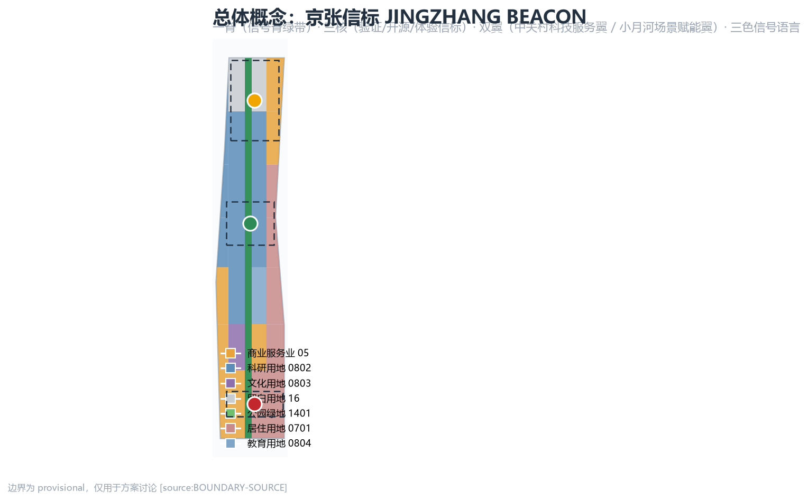
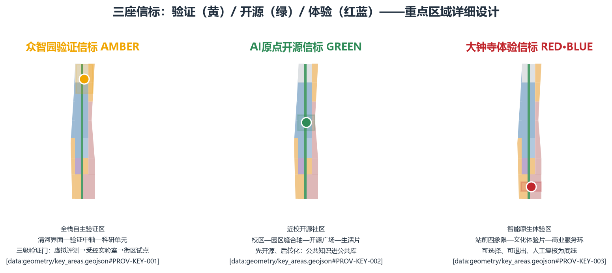
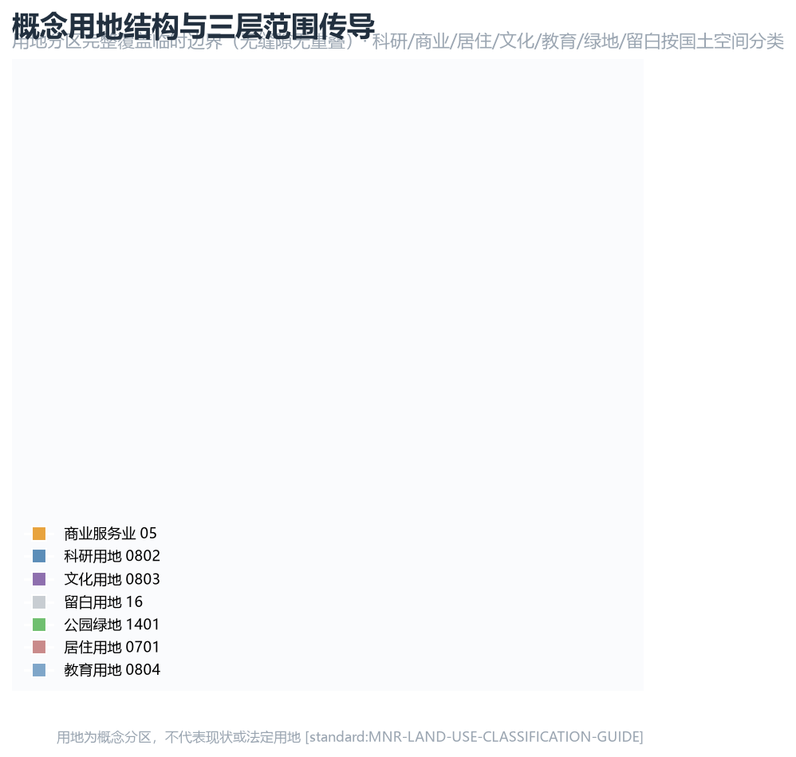
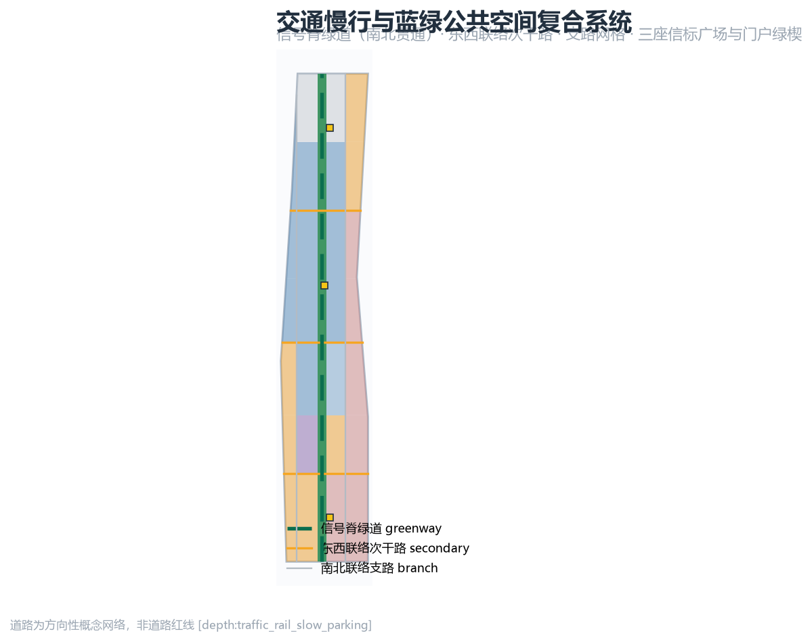

以百年京张铁路信号体系为原型：绿色 = 可体验，黄色 = 受控测试，红色 = 停用与回滚。一脊三核双翼的空间结构把 AI 治理原则转译为街道上可感知、可复核、可回退的公共界面。全部空间与活动均为开放共创概念建议，不替代正式规划，不构成政府审定结论。


AI 产业生态与未来城市形态：建立"策源—验证—开源—体验—治理"信号链，组织三区两翼协同回路与全球 AI 创新活动体系。
用地分区交通慢行蓝绿公共空间
产业空间、城市更新、交通市政与风貌落图：35 个用地单元完整覆盖临时边界，信号脊绿带贯通南北，建筑/道路/绿地/分期共同表达设计意图。
用地分区建筑更新项目
三处重点区达到详细设计深度：众智园验证信标（黄）、AI 原点开源信标（绿）、大钟寺体验信标（红蓝），每区给出定位、空间动作、AI 场景与实施依赖。
重点区域AI 场景
全栈自主验证区：清河界面—验证中轴—科研单元；三级验证门（虚拟评测→受控实验室→街区试点）；模型评测与红队沙盒、全栈模型受控试运营、城市智能体公开审计台。
产业测试验证场景AI全栈自主创新
近校开源社区：校区—园区缝合轴—开源广场—生活片；开源发布厅、近校成果转化街；"先开源、后转化"，公共知识进入公共库，成果按许可回馈社区。
开源协作成果转化
智能原生体验区：站前四象限—文化体验片—商业服务环；国际路演客厅、数据要素会客厅、AI 生活服务样板街；所有体验以"可选择、可退出"为底线。
智能原生消费站城一体
| 编号 | 场景卡 | 信号 |
|---|---|---|
| SC-01 | 开源发布厅（AI原点） | 绿 |
| SC-02 | 模型评测与红队沙盒（众智园） | 黄 · 测试 |
| SC-03 | 端侧算力驿站（信号脊） | 绿 |
| SC-04 | AI 慢行导航（信号脊绿道） | 绿 |
| SC-05 | 大钟寺国际路演客厅 | 绿 |
| SC-06 | 清河低碳创新廊（众智园） | 黄 |
| SC-07 | 近校成果转化街（AI原点） | 绿 |
| SC-08 | 数据要素会客厅（大钟寺） | 黄 |
| SC-09 | AI 生活服务样板街 | 绿 |
| SC-10 | 全球 AI 活动周路线 | 绿 |
| SC-11 | 全栈模型受控试运营（众智园） | 黄 · 测试 |
| SC-12 | 城市智能体公开审计台（众智园） | 黄/红 · 测试 |
| 画像 | 空间响应 |
|---|---|
| 开源开发者 | 原点开源广场、公共代码墙、夜间协作空间 |
| 初创与科研团队 | 众智园共享测试场、端侧算力服务点、验证门 |
| 头部企业与国际访客 | 站前复合界面、信标广场、国际路演客厅 |
| 周边居民 | 信号脊慢行环、社区服务嵌入、活动分级 |
| 高校师生 | 校区-园区缝合、成果转化街、AI 教育体验点 |


| 编号 | 项目名称 | 类型 | 分期 |
|---|---|---|---|
| JZ-01 | 京张信号脊慢行断点缝合 | 公共空间/交通 | 近期 |
| JZ-02 | 众智园清河低碳创新界面 | 蓝绿空间/产业展示 | 近期 |
| JZ-03 | 原点近校成果转化街 | 城市更新/产业服务 | 近期 |
| JZ-04 | 大钟寺站四象限步行连通 | 轨道一体化/慢行 | 中期 |
| JZ-05 | 三座信标广场实施 | 公共空间/品牌 | 中期 |
| JZ-06 | AI 公共服务与端侧算力节点 | 新基建/公共服务 | 中期 |
| JZ-07 | 全球 AI 活动周公共路线 | 运营/品牌 | 远期 |
PASS BOUNDARY_TRUST：临时边界已标注，不用于官方红线
PASS KEY_AREAS_TRUST：三处重点区为 provisional，已披露
PASS LAND_USE_TOPOLOGY：用地完整覆盖、无重叠
PASS VISUAL_STATIC：本页为离线静态 HTML，无远程资源
PASS PROFESSIONAL_EVIDENCE：标准、深度、几何、指标、来源、假设均已引用